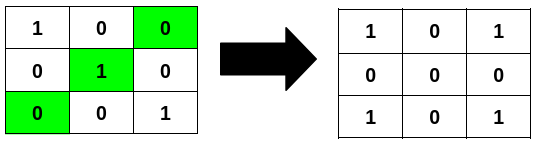
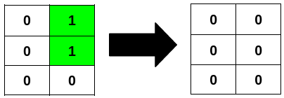
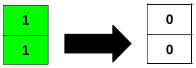

| Category | Difficulty | Likes | Dislikes |
|---|---|---|---|
| Algorithms | Medium | 141 | 57 |
array | two-pointers | matrix
google
You are given an m x n binary matrix grid.
A row or column is considered palindromic if its values read the same forward and backward.
You can flip any number of cells in grid from 0 to 1, or from 1 to 0.
Return the minimum number of cells that need to be flipped to make all rows and columns palindromic, and the total number of 1's in grid divisible by 4.
Example 1:
Input: grid = [[1,0,0],[0,1,0],[0,0,1]]
Output: 3
Explanation:

Example 2:
Input: grid = [[0,1],[0,1],[0,0]]
Output: 2
Explanation:

Example 3:
Input: grid = [[1],[1]]
Output: 2
Explanation:

Constraints:
m == grid.lengthn == grid[i].length1 <= m * n <= 2 * 1050 <= grid[i][j] <= 1